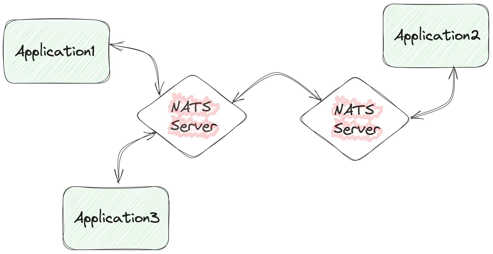
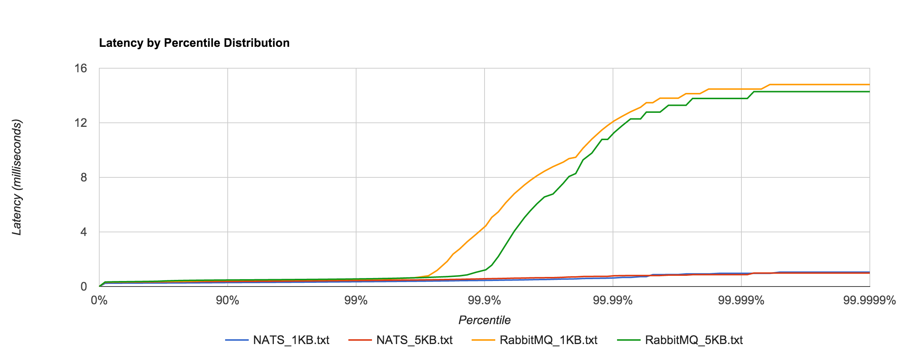
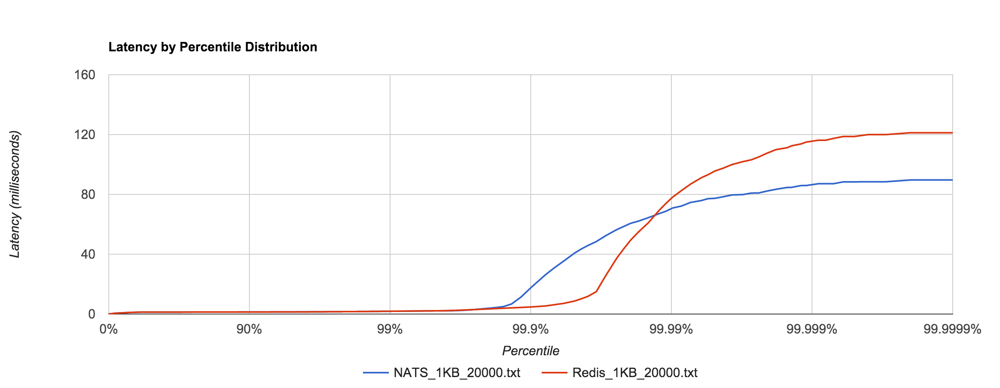

Going

Piotr Ciruk
NATS.io
- messaging system
- written in Ruby, re-written in Go
- at-most-once delivery
- Apache License 2.0
NATS.io
- Core NATS
- Jetstream
Core NATS
- Publish-Subscribe
- Request-Reply
- Queue Groups
Jetstream
- at-least-once-delivery
- built on top of Core NATS
Architecture
Single node
Multiple nodes
Protocol
Text based
Reduced message set
Space-delimited fields
Messages terminated with CR-LF
Protocol
Client -> Server
| PUB | HPUB | SUB | UNSUB || CONNECT | PING | PONG | Protocol
Server -> Client
| MSG | HMSG | +OK | -ERR || INFO | PING | PONG | Demo
Performance
Benchmarks
3k RPS
source: https://bravenewgeek.com/benchmarking-message-queue-latency/
Benchmarks
20k RPS
25 concurrent connections
source: https://bravenewgeek.com/benchmarking-message-queue-latency/
Production
Case #1
Throughput-sensitive
Latency not a primary concern
Production
| Average [msg/s] | Bursts [msg/s] | Total [msg/day] | |
|---|---|---|---|
| In | 715k | 1.5M | 18B |
| Out | 2.4M | 4.5M | 60B |
Production
Case #2
6M+ events (not messages)
200k subscriptions
Latency matters
Production
| Average [msg/s] | Bursts [msg/s] | Total [msg/day] | |
|---|---|---|---|
| In | 700 | 2-6k | 18M |
| Out | 13.8k | 30-50k | 350M |
Production
Multiple producers - single consumer
| Latency | Percentile |
|---|---|
| <100ms | 99.997 |
| <50ms | 99.93 |
| <10ms | 99.78 |
Operations
Docker
Logs - file disabled by default
No metrics exporter
Limited flexibility with official images
UTC timestamps
Bitnami Distribution
Configuration via environmental variables
Logging to file
Helm Chart with metrics exporter
/varz
server state and configuration
max_payload
write_deadline
{in|out}_msgs
{in|out}_bytes
/connz
current and recently closed connections
paged - defaults to 1024
subs - number of subscriptions
Java client
Options
connection name
callbacks
Connection listener
Hardcoded thread pool
Max payload
Message silently discarded
Headers
Key (String) -> List of String values
Unnecessary allocation
Fast producers
Options
maxMessagesInOutgoingQueue(int)
Options
discardMessagesWhenOutgoingQueueFull()
Slow consumers
Client side
Error callback
Client side
Limits
var dispatcher = ...;
dispatcher.setPendingLimits(int, int)
Server side
Automatic disconnection
write_deadline: '1s'